🧱 PyGamLab structures Module — General Overview¶
The structures module in PyGamLab serves as the core framework for creating, manipulating, and visualizing atomic and molecular systems. It provides a consistent and extensible platform for generating nanomaterials and atomic-scale architectures across all dimensionalities — from zero-dimensional nanoclusters to three-dimensional bulk crystals.
The module is divided into two main subpackages, each addressing a different conceptual approach to structure generation:
GAM_architectures — Parametric and crystallographic atomic architectures
Generators — Dimensionality-based material builders (0D–3D)
Together, these subpackages enable researchers to explore a wide range of materials, from idealized lattice-based nanostructures to realistic, defect-containing systems.
Visualization tips:
efficient_plotly for interactive spinning/zooming, matplotlib for static figures, pyvista for advanced 3D (may require pyvistaqt).
🧬 1. GAM_architectures¶
The GAM_architectures subpackage is designed for constructing geometrically and crystallographically defined nanostructures. It focuses on materials that can be described by well-ordered lattice parameters, symmetries, and periodic boundary conditions.
This package is particularly useful for theoretical modeling, electronic structure simulations, and molecular visualization of materials such as graphene, silicene, phosphorene, carbon nanotubes, and metallic nanoparticles.
🎯 Purpose:
To generate and visualize atomistic architectures that follow well-defined crystalline or quasi-crystalline geometries.
🔹 Submodules under GAM_architectures:
Submodule Description
Graphene
Generates graphene sheets and related carbon-based 2D materials with customizable edge types (armchair, zigzag) and lattice parameters.
Silicene
Builds silicene structures, a silicon-based 2D analog of graphene with buckled geometry and tunable lattice constants.
Phosphorene
Constructs phosphorene nanosheets with adjustable dimensions, edge types, and puckering height.
Nanoparticles
Creates metallic and bimetallic nanoparticles with variable size, shape, and elemental distribution.
Nanotubes
Generates carbon nanotubes (SWCNT, MWCNT) and their doped or defected variants using chiral indices (n, m).
These modules are ideal for studying electronic, mechanical, and optical properties of low-dimensional nanostructures within a precisely defined atomic framework.
🧩 Category 1: Graphene Structures¶
Graphene is a two-dimensional nanomaterial consisting of a single layer of carbon atoms arranged in a hexagonal (honeycomb) lattice. Each carbon atom is bonded to three neighboring atoms through strong sp² hybridized covalent bonds. Graphene exhibits extraordinary electrical, mechanical, and thermal properties, making it one of the most promising materials for applications in nanoelectronics, sensors, and energy storage devices.
In this section, we use the PyGamLab package to generate different graphene sheets by adjusting parameters such as edge type, lattice constant, and sheet dimensions (width and length). Finally, each structure is visualized in several formats using the Molecular_Visualizer tool.
Notes about parameter conventions used here
lattice_constant is in Å (ångström).
width and length are given as number of unit cells in each lattice direction (dimensionless).
Approximate physical size (coarse estimate) = width × lattice_constant and length × lattice_constant (reported in Å and nm).
🔹 Example 1 – Graphene Sheet with Armchair Edge, width=10, length=10, default lattice (≈2.46 Å)¶
In this example, a graphene sheet is generated with Armchair-type edges, which correspond to a specific direction along the hexagonal lattice. Armchair edges typically appear smoother and more stable, and they exhibit different electronic properties compared to zigzag edges.
This configuration is useful for studying pristine graphene sheets or semiconducting armchair nanoribbons.
from PyGamLab.structures.GAM_architectures.GAM_Graphene import Graphene
from PyGamLab.structures.gamvis import Molecular_Visualizer
builder = Graphene(width=10, length=10, edge_type='armchair')
graphene1=builder.atoms
Molecular_Visualizer(graphene1,format='efficient_plotly')
Molecular_Visualizer(graphene1,format='matplotlib')
Molecular_Visualizer(graphene1,format='pyvista')
Visualizing 45 atoms using efficient_plotly format...
Visualizing 45 atoms using matplotlib format...
Visualizing 45 atoms using pyvista format...
C:Userskarimminiconda3envsscience_envlibsite-packagespyvistajupyternotebook.py:37: UserWarning: Failed to use notebook backend: No module named 'trame' Falling back to a static output.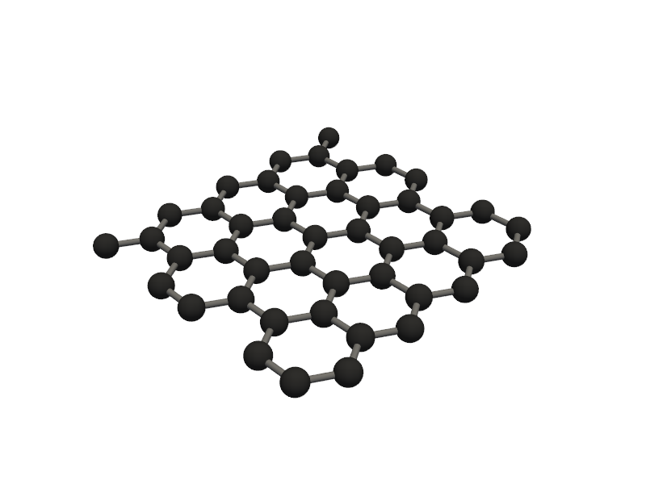
🔹 Example 2 – Graphene Sheet with Zigzag Edge, width=10, length=10, default lattice (≈2.46 Å)¶
Here, the graphene sheet is created with zigzag-type edges. Zigzag edges are known for producing localized edge states that can lead to magnetic behavior or enhanced chemical reactivity.
The sheet has a similar size to Example 1, but the atomic arrangement along the edges differs significantly.
This type of model is ideal for exploring edge magnetism and electron localization in graphene nanoribbons.
from PyGamLab.structures.GAM_architectures.GAM_Graphene import Graphene
from PyGamLab.structures.gamvis import Molecular_Visualizer
builder = Graphene(width=10, length=10, edge_type='zigzag')
graphene2=builder.atoms
Molecular_Visualizer(graphene2,format='efficient_plotly')
Molecular_Visualizer(graphene2,format='matplotlib')
Molecular_Visualizer(graphene2,format='pyvista')
Visualizing 45 atoms using efficient_plotly format...
Visualizing 45 atoms using matplotlib format...
Visualizing 45 atoms using pyvista format...
C:Userskarimminiconda3envsscience_envlibsite-packagespyvistajupyternotebook.py:37: UserWarning: Failed to use notebook backend: No module named 'trame' Falling back to a static output.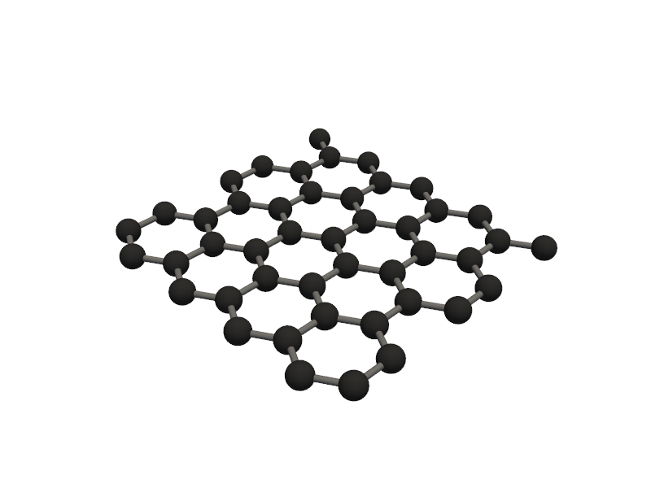
🔹 Example 3 – Zigzag Graphene Sheet, width=5, length=5, lattice_constant=2.5 Ŷ
In this case, a smaller graphene sheet is generated with zigzag edges and a slightly stretched lattice constant (2.5 Å). This effectively applies a small tensile strain (~1.6%) to the lattice, which can shift the electronic band structure or phonon properties.
It represents a compact, strained graphene cluster suitable for testing the effects of lattice deformation.
from PyGamLab.structures.GAM_architectures.GAM_Graphene import Graphene
from PyGamLab.structures.gamvis import Molecular_Visualizer
builder = Graphene(width=5, length=5, edge_type='zigzag',lattice_constant=2.5)
graphene3=builder.atoms
Molecular_Visualizer(graphene3,format='efficient_plotly')
Molecular_Visualizer(graphene3,format='matplotlib')
Molecular_Visualizer(graphene3,format='pyvista')
Visualizing 12 atoms using efficient_plotly format...
Visualizing 12 atoms using matplotlib format...
Visualizing 12 atoms using pyvista format...
C:Userskarimminiconda3envsscience_envlibsite-packagespyvistajupyternotebook.py:37: UserWarning: Failed to use notebook backend: No module named 'trame' Falling back to a static output.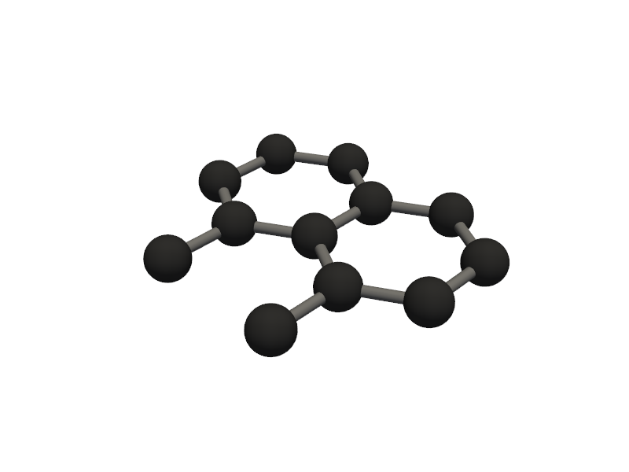
🔹 Example 4 – Armchair Graphene Sheet, width=5, length=5, lattice_constant=2.5 Ŷ
This example is similar to the previous one but uses armchair edges instead of zigzag. By keeping the same size and lattice constant, you can directly compare the structural and potential electronic differences between the two edge configurations.
Such comparisons are valuable in edge-dependent studies or nanoribbon bandgap analyses.
from PyGamLab.structures.GAM_architectures.GAM_Graphene import Graphene
from PyGamLab.structures.gamvis import Molecular_Visualizer
builder = Graphene(width=5, length=5, edge_type='armchair',lattice_constant=2.5)
graphene4=builder.atoms
Molecular_Visualizer(graphene4,format='efficient_plotly')
Molecular_Visualizer(graphene4,format='matplotlib')
Molecular_Visualizer(graphene4,format='pyvista')
Visualizing 12 atoms using efficient_plotly format...
Visualizing 12 atoms using matplotlib format...
Visualizing 12 atoms using pyvista format...
C:Userskarimminiconda3envsscience_envlibsite-packagespyvistajupyternotebook.py:37: UserWarning: Failed to use notebook backend: No module named 'trame' Falling back to a static output.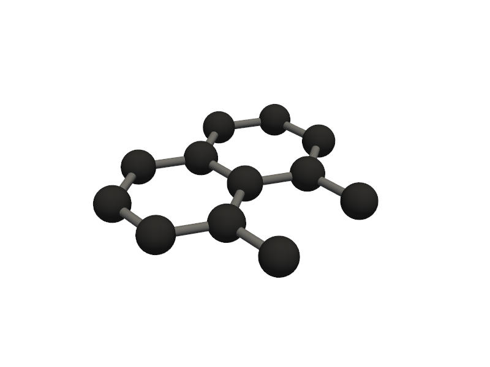
🔹 Example 5 – Elongated Armchair Nanoribbon, width=20, length=5, lattice_constant=2.5 Ŷ
In this example, an elongated armchair graphene nanoribbon is created. This geometry mimics a quasi–one-dimensional ribbon, useful for studying quantum confinement and transport properties along the ribbon axis.
This structure combines manageable size with realistic nanoscale proportions.
It’s particularly suitable for exploring how ribbon width influences bandgap and conductivity.
from PyGamLab.structures.GAM_architectures.GAM_Graphene import Graphene
from PyGamLab.structures.gamvis import Molecular_Visualizer
builder = Graphene(width=20, length=5, edge_type='armchair',lattice_constant=2.5)
graphene5=builder.atoms
Molecular_Visualizer(graphene5,format='efficient_plotly')
Molecular_Visualizer(graphene5,format='matplotlib')
Molecular_Visualizer(graphene5,format='pyvista')
Visualizing 42 atoms using efficient_plotly format...
Visualizing 42 atoms using matplotlib format...
Visualizing 42 atoms using pyvista format...
C:Userskarimminiconda3envsscience_envlibsite-packagespyvistajupyternotebook.py:37: UserWarning: Failed to use notebook backend: No module named 'trame' Falling back to a static output.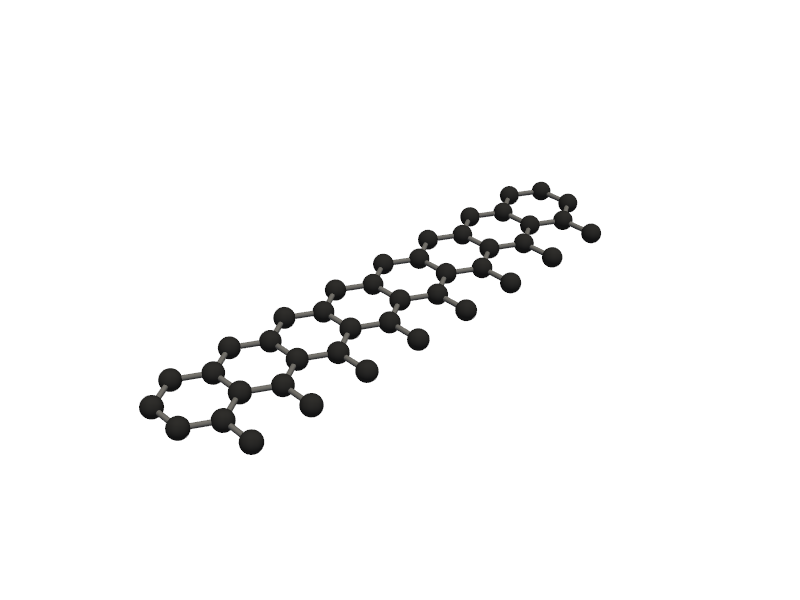
⚛️ Category 2 — Silicene¶
Silicene is a two-dimensional (2D) allotrope of silicon, structurally similar to graphene but with key differences. While graphene is perfectly flat, silicene exhibits a slight buckling due to the larger size of silicon atoms and their partial sp³ hybridization. This buckling introduces a tunable electronic bandgap, making silicene promising for nanoelectronics, sensors, and spintronic devices.
In this section, we will generate and visualize several silicene sheets with varying edge types, dimensions, and buckling heights using PyGamLab.
🔹 Example 1 – Silicene Sheet with Armchair Edge, width=10, length=10, default buckling (≈0.44 Å)¶
In this example, a silicene sheet is created with armchair-type edges. Armchair edges, similar to those in graphene, produce smoother terminations with relatively uniform electronic density along the boundary.
The default buckling height (~0.44 Å) is automatically applied to mimic the out-of-plane displacement of silicon atoms.
Such configurations are often used to study strain effects or bandgap modulation in armchair silicene nanoribbons.
from PyGamLab.structures.GAM_architectures.GAM_sillicene import Silicene
from PyGamLab.structures.gamvis import Molecular_Visualizer
builder = Silicene(width=10, length=10, edge_type='armchair')
silicene1=builder.atoms
Molecular_Visualizer(silicene1,format='efficient_plotly')
Molecular_Visualizer(silicene1,format='matplotlib')
Molecular_Visualizer(silicene1,format='pyvista')
Visualizing 98 atoms using efficient_plotly format...

Visualizing 98 atoms using matplotlib format...
Visualizing 98 atoms using pyvista format...
C:Userskarimminiconda3envsscience_envlibsite-packagespyvistajupyternotebook.py:37: UserWarning: Failed to use notebook backend: No module named 'trame' Falling back to a static output.

🔹 Example 2 – Silicene Sheet with Zigzag Edge, width=10, length=10, default buckling (≈0.44 Å)¶
Here, a silicene sheet is constructed with zigzag-type edges. Zigzag terminations can produce edge-localized states similar to graphene, but due to silicene’s buckling, they may also lead to spin-polarized edge currents.
The model is square-shaped and represents a balanced structure between size and computational efficiency.
It’s especially useful for investigating edge magnetism or electronic asymmetry between the two sublattices.
from PyGamLab.structures.GAM_architectures.GAM_sillicene import Silicene
from PyGamLab.structures.gamvis import Molecular_Visualizer
builder = Silicene(width=10, length=10, edge_type='zigzag')
silicene2=builder.atoms
Molecular_Visualizer(silicene2,format='efficient_plotly')
Molecular_Visualizer(silicene2,format='matplotlib')
Molecular_Visualizer(silicene2,format='pyvista')
Visualizing 98 atoms using efficient_plotly format...
Visualizing 98 atoms using matplotlib format...

Visualizing 98 atoms using pyvista format...
C:Userskarimminiconda3envsscience_envlibsite-packagespyvistajupyternotebook.py:37: UserWarning: Failed to use notebook backend: No module named 'trame' Falling back to a static output.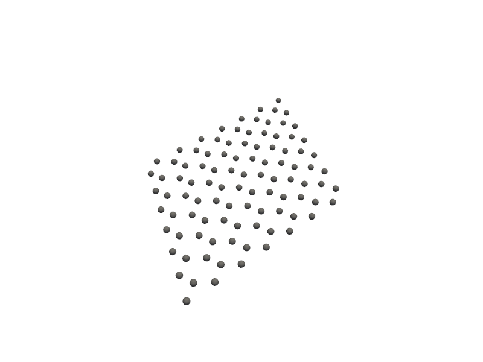
🔹 Example 3 – Zigzag Silicene Sheet, width=5, length=10, default buckling (≈0.44 Å)¶
This smaller rectangular silicene sheet features zigzag edges along one axis. The asymmetric geometry allows simulation of directional electronic transport or anisotropic strain.
The reduced width introduces stronger quantum confinement effects, while the zigzag edge enhances the potential for spin-polarized states. Such structures model realistic silicene nanoribbons used in transistor-scale simulations.
from PyGamLab.structures.GAM_architectures.GAM_sillicene import Silicene
from PyGamLab.structures.gamvis import Molecular_Visualizer
builder = Silicene(width=5, length=10, edge_type='zigzag')
silicene3=builder.atoms
Molecular_Visualizer(silicene3,format='efficient_plotly')
Molecular_Visualizer(silicene3,format='matplotlib')
Molecular_Visualizer(silicene3,format='pyvista')
Visualizing 70 atoms using efficient_plotly format...
Visualizing 70 atoms using matplotlib format...
Visualizing 70 atoms using pyvista format...
C:Userskarimminiconda3envsscience_envlibsite-packagespyvistajupyternotebook.py:37: UserWarning: Failed to use notebook backend: No module named 'trame' Falling back to a static output.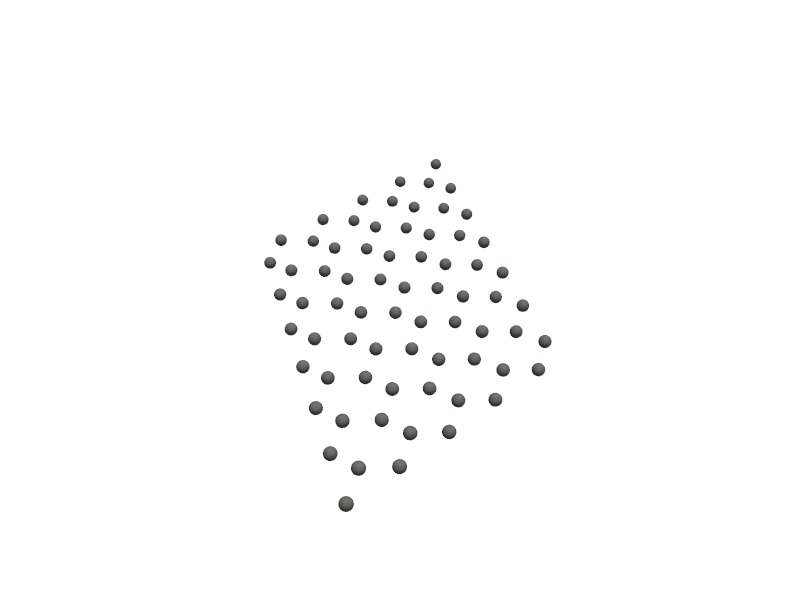
🔹 Example 4 – Zigzag Silicene Sheet, width=5, length=5, buckling_height=0.2 Ŷ
In this case, a smaller silicene sheet is generated with reduced buckling (0.2 Å). This adjustment flattens the structure closer to a graphene-like geometry, reducing the influence of sp³ hybridization.
Smaller buckling values can simulate external pressure, substrate effects, or thermal flattening. This configuration helps explore how lattice planarity influences bandgap closure or electron mobility.
from PyGamLab.structures.GAM_architectures.GAM_sillicene import Silicene
from PyGamLab.structures.gamvis import Molecular_Visualizer
builder = Silicene(width=5, length=5, edge_type='zigzag',buckling_height=0.2)
silicene4=builder.atoms
Molecular_Visualizer(silicene4,format='efficient_plotly')
Molecular_Visualizer(silicene4,format='matplotlib')
Molecular_Visualizer(silicene4,format='pyvista')
Visualizing 50 atoms using efficient_plotly format...
Visualizing 50 atoms using matplotlib format...
Visualizing 50 atoms using pyvista format...
C:Userskarimminiconda3envsscience_envlibsite-packagespyvistajupyternotebook.py:37: UserWarning: Failed to use notebook backend: No module named 'trame' Falling back to a static output.
🔹 Example 5 – Zigzag Silicene Sheet, width=5, length=5, buckling_height=0.4 Ŷ
This example increases the buckling height to 0.4 Å, creating a more realistic silicene surface with pronounced out-of-plane distortion. Higher buckling enhances spin–orbit coupling and can induce a small topological bandgap, relevant for quantum spin Hall effect studies.
The sheet’s size remains compact for quick visualization and computational analysis. It’s an excellent model to compare directly with the flatter configuration in Example 4.
from PyGamLab.structures.GAM_architectures.GAM_sillicene import Silicene
from PyGamLab.structures.gamvis import Molecular_Visualizer
builder = Silicene(width=5, length=5, edge_type='zigzag',buckling_height=0.4)
silicene5=builder.atoms
Molecular_Visualizer(silicene5,format='efficient_plotly')
Molecular_Visualizer(silicene5,format='matplotlib')
Molecular_Visualizer(silicene5,format='pyvista')
Visualizing 50 atoms using efficient_plotly format...
Visualizing 50 atoms using matplotlib format...
Visualizing 50 atoms using pyvista format...
C:Userskarimminiconda3envsscience_envlibsite-packagespyvistajupyternotebook.py:37: UserWarning: Failed to use notebook backend: No module named 'trame' Falling back to a static output.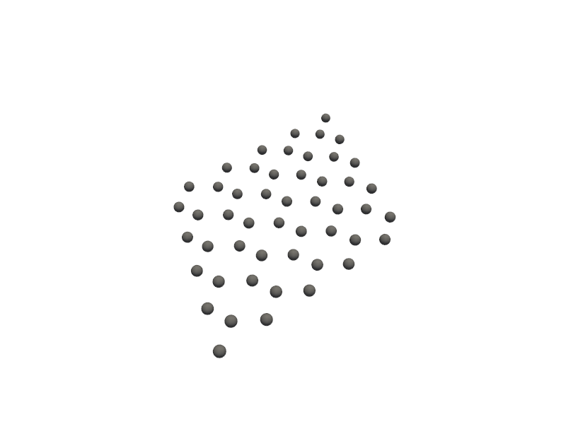
⚛️ Category 3 — Phosphorene¶
Phosphorene is a two-dimensional (2D) form of black phosphorus, consisting of a single or few puckered atomic layers of phosphorus atoms. Unlike flat materials such as graphene, phosphorene has a corrugated or “puckered” structure due to its sp³ hybridization, giving it highly anisotropic properties — meaning its electronic, optical, and mechanical behavior depends strongly on the direction.
Phosphorene exhibits a direct bandgap (unlike graphene’s zero bandgap) that varies with thickness, making it highly attractive for field-effect transistors (FETs), photodetectors, and thermoelectric applications. Its structural flexibility and high carrier mobility make it one of the most promising next-generation 2D semiconductors.
In this section, we generate phosphorene sheets with varying dimensions, edge orientations, and puckering heights to explore their geometric and structural differences.
🔹 Example 1 – Phosphorene Sheet with Armchair Edge, width=10, length=10, default puckering height (≈2.1 Å)¶
In this example, a phosphorene monolayer is constructed with armchair-type edges and a default puckering height of approximately 2.1 Å. This structure displays the characteristic ridged geometry of phosphorene, where alternating atoms are displaced vertically, forming a wavy surface.
With both width and length set to 10, the sheet is a balanced model for visualizing atomic arrangement and simulating isotropic deformation.
Armchair edges in phosphorene typically yield smoother electronic transitions and are less reactive than zigzag edges.
from PyGamLab.structures.GAM_architectures.GAM_phosphorene import Phosphorene
from PyGamLab.structures.gamvis import Molecular_Visualizer
builder = Phosphorene(width=10, length=10, edge_type='armchair')
phosphorene1=builder.atoms
Molecular_Visualizer(phosphorene1,format='efficient_plotly')
Molecular_Visualizer(phosphorene1,format='matplotlib')
Molecular_Visualizer(phosphorene1,format='pyvista')
Visualizing 35 atoms using efficient_plotly format...
Visualizing 35 atoms using matplotlib format...
Visualizing 35 atoms using pyvista format...
C:Userskarimminiconda3envsscience_envlibsite-packagespyvistajupyternotebook.py:37: UserWarning: Failed to use notebook backend: No module named 'trame' Falling back to a static output.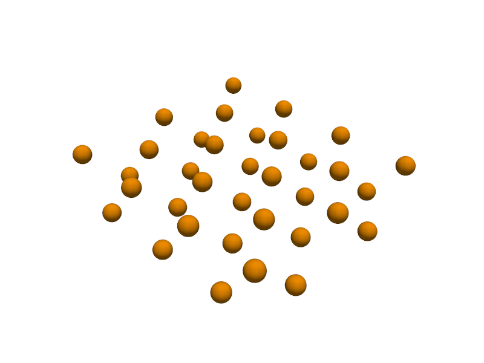
🔹 Example 2 – Armchair Phosphorene Sheet, width=5, length=10, default puckering height (≈2.1 Å)¶
Here, a rectangular phosphorene sheet is created with reduced width (5) but the same length (10), making it narrower in one direction and useful for studying directional strain and anisotropic electronic transport.
The armchair edge configuration maintains stable bonding, while the smaller width enhances quantum confinement effects — an important factor in designing nanoscale phosphorene ribbons.
from PyGamLab.structures.GAM_architectures.GAM_phosphorene import Phosphorene
from PyGamLab.structures.gamvis import Molecular_Visualizer
builder = Phosphorene(width=5, length=10, edge_type='armchair')
phosphorene2=builder.atoms
Molecular_Visualizer(phosphorene2,format='efficient_plotly')
Molecular_Visualizer(phosphorene2,format='matplotlib')
Molecular_Visualizer(phosphorene2,format='pyvista')
Visualizing 18 atoms using efficient_plotly format...
Visualizing 18 atoms using matplotlib format...
Visualizing 18 atoms using pyvista format...
C:Userskarimminiconda3envsscience_envlibsite-packagespyvistajupyternotebook.py:37: UserWarning: Failed to use notebook backend: No module named 'trame' Falling back to a static output.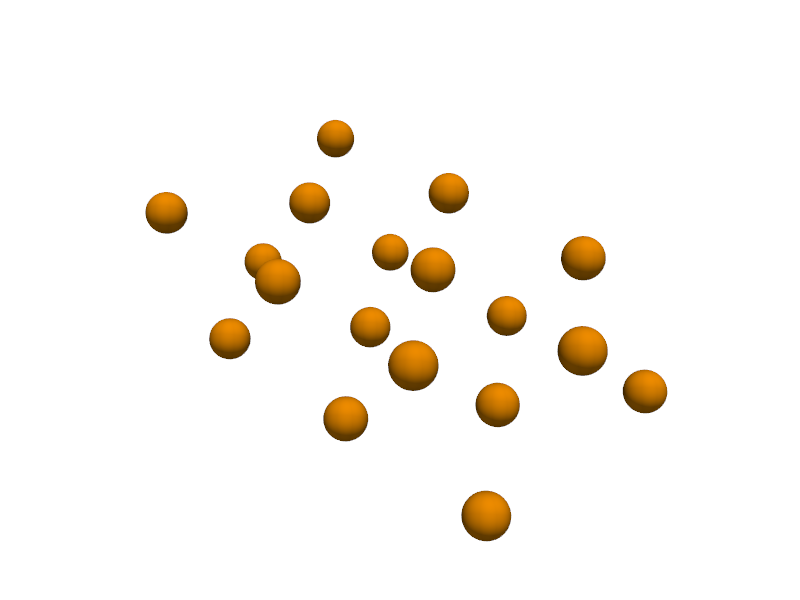
🔹 Example 3 – Zigzag Phosphorene Sheet, width=10, length=10, default puckering height (≈2.1 Å)¶
This model represents a phosphorene sheet with zigzag-type edges, which differ significantly from armchair terminations. Zigzag edges in phosphorene often show enhanced edge reactivity and can localize electronic states at the boundaries.
The sheet size (10 × 10) makes it large enough to clearly display the puckered ridges across the surface. Such configurations are typically employed in studies involving edge passivation, electronic bandgap tuning, or chemical adsorption at reactive sites.
from PyGamLab.structures.GAM_architectures.GAM_phosphorene import Phosphorene
from PyGamLab.structures.gamvis import Molecular_Visualizer
builder = Phosphorene(width=10, length=10, edge_type='zigzag')
phosphorene3=builder.atoms
Molecular_Visualizer(phosphorene3,format='efficient_plotly')
Molecular_Visualizer(phosphorene3,format='matplotlib')
Molecular_Visualizer(phosphorene3,format='pyvista')
Visualizing 35 atoms using efficient_plotly format...
Visualizing 35 atoms using matplotlib format...
Visualizing 35 atoms using pyvista format...
C:Userskarimminiconda3envsscience_envlibsite-packagespyvistajupyternotebook.py:37: UserWarning: Failed to use notebook backend: No module named 'trame' Falling back to a static output.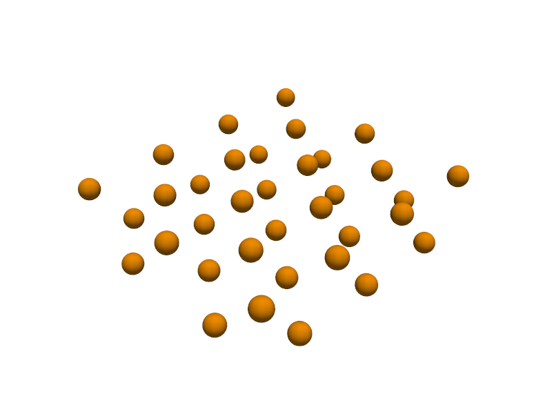
🔹 Example 4 – Armchair Phosphorene Sheet with Reduced Puckering, width=10, length=10, puckering_height=1.5 Ŷ
In this case, the puckering height is explicitly reduced to 1.5 Å, producing a less corrugated phosphorene layer. This flattens the ridges slightly and can simulate substrate-induced flattening or external compression.
A smaller puckering height reduces the structural anisotropy, potentially narrowing the bandgap and improving charge carrier mobility along the armchair direction. Such modifications are relevant for strain engineering and mechanical tuning of phosphorene’s electronic behavior.
from PyGamLab.structures.GAM_architectures.GAM_phosphorene import Phosphorene
from PyGamLab.structures.gamvis import Molecular_Visualizer
builder = Phosphorene(width=10, length=10, edge_type='armchair',puckering_height=1.5)
phosphorene4=builder.atoms
Molecular_Visualizer(phosphorene4,format='efficient_plotly')
Molecular_Visualizer(phosphorene4,format='matplotlib')
Molecular_Visualizer(phosphorene4,format='pyvista')
Visualizing 35 atoms using efficient_plotly format...
Visualizing 35 atoms using matplotlib format...
Visualizing 35 atoms using pyvista format...
C:Userskarimminiconda3envsscience_envlibsite-packagespyvistajupyternotebook.py:37: UserWarning: Failed to use notebook backend: No module named 'trame' Falling back to a static output.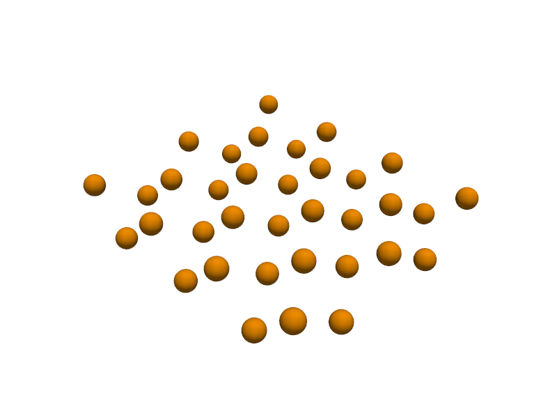
🔹 Example 5 – Armchair Phosphorene Sheet with Enhanced Puckering, width=10, length=10, puckering_height=3.0 Ŷ
In the final example, the puckering height is increased to 3.0 Å, exaggerating the corrugation of the phosphorene lattice. A larger puckering amplitude enhances out-of-plane orbital overlap and may significantly alter the effective bandgap and optical absorption characteristics.
This configuration can represent phosphorene grown under low-strain conditions or on weakly interacting substrates that allow greater structural relaxation. It’s ideal for visual studies of how puckering depth influences interlayer distance and anisotropic bonding geometry.
from PyGamLab.structures.GAM_architectures.GAM_phosphorene import Phosphorene
from PyGamLab.structures.gamvis import Molecular_Visualizer
builder = Phosphorene(width=10, length=10, edge_type='armchair',puckering_height=3)
phosphorene4=builder.atoms
Molecular_Visualizer(phosphorene4,format='efficient_plotly')
Molecular_Visualizer(phosphorene4,format='matplotlib')
Molecular_Visualizer(phosphorene4,format='pyvista')
Visualizing 35 atoms using efficient_plotly format...
Visualizing 35 atoms using matplotlib format...
Visualizing 35 atoms using pyvista format...
C:Userskarimminiconda3envsscience_envlibsite-packagespyvistajupyternotebook.py:37: UserWarning: Failed to use notebook backend: No module named 'trame' Falling back to a static output.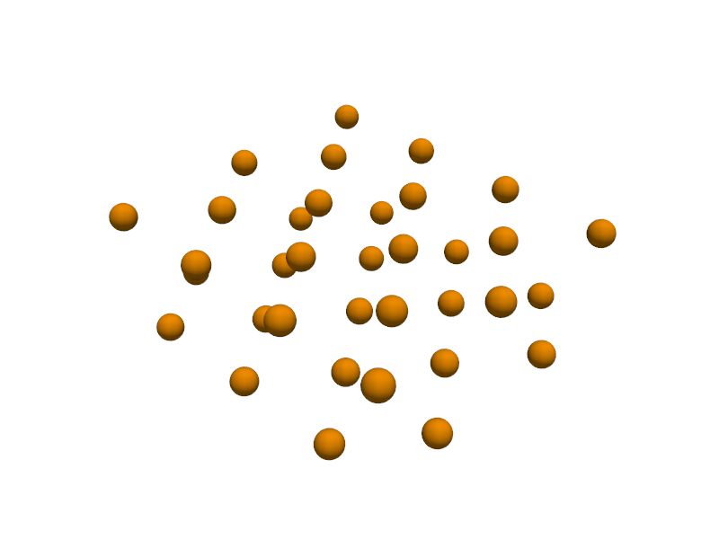
⚛️ Category 4 — Nanoparticles¶
Nanoparticles (NPs) are zero-dimensional (0D) nanomaterials whose dimensions typically range between 1 and 100 nanometers. At these scales, quantum confinement, surface-to-volume ratio, and atomic coordination effects become dominant — leading to unique optical, electronic, and catalytic properties that differ drastically from their bulk counterparts.
Unlike 2D materials such as graphene or silicene, which extend in two directions, nanoparticles are confined in all three spatial dimensions — giving rise to quantum confinement, size-dependent properties, and enhanced surface activity.
Because a significant fraction of atoms lie on the surface, nanoparticles often display remarkable optical, electrical, magnetic, and catalytic behaviors that differ fundamentally from their bulk counterparts. They can be composed of metals (e.g., Au, Ag, Pt), semiconductors (e.g., CdSe, ZnO), oxides, or even hybrid composites, each offering unique functionalities.
Nanoparticles are widely used in:
Catalysis (e.g., Au or Pt nanoparticles in chemical reactions),
Biomedicine (drug delivery, imaging, photothermal therapy),
Optoelectronics (quantum dots in LEDs or solar cells), and
Energy storage (battery and supercapacitor electrodes).
In the following examples, we focus on metallic nanoparticles—specifically gold (Au) and gold–silver (Au–Ag) alloy systems. The goal is to explore how size, composition, and atomic distribution affect their physical structure and potential applications.
🔹 Example 1 – Pure Gold Nanoparticle, element=“Au”, size_nm=2.0¶
In this example, a pure gold (Au) nanoparticle of 2.0 nm diameter is generated using the Nanoparticle_Generator class. This small cluster consists of only a few hundred atoms, exhibiting pronounced quantum confinement effects. Such nanoparticles are known for their strong plasmonic absorption and are used in bioimaging and nanophotonics.
from PyGamLab.structures.GAM_architectures.GAM_nano_particles import Nanoparticle_Generator
from PyGamLab.structures.gamvis import Molecular_Visualizer
builder = Nanoparticle_Generator(element="Au", size_nm=2.0)
Au1=builder.atoms
Molecular_Visualizer(Au1,format='efficient_plotly')
Molecular_Visualizer(Au1,format='matplotlib')
Molecular_Visualizer(Au1,format='pyvista')
Visualizing 249 atoms using efficient_plotly format...
Visualizing 249 atoms using matplotlib format...
Visualizing 249 atoms using pyvista format...
C:Userskarimminiconda3envsscience_envlibsite-packagespyvistajupyternotebook.py:37: UserWarning: Failed to use notebook backend: No module named 'trame' Falling back to a static output.

🔹 Example 2 – Pure Gold Nanoparticle, element=“Au”, size_nm=4.0¶
Here, the nanoparticle size is increased to 4.0 nm. As the particle grows larger, quantum effects weaken and bulk-like metallic properties begin to emerge. This example demonstrates how increasing nanoparticle size changes its surface-to-volume ratio and, consequently, its chemical and optical behavior.
from PyGamLab.structures.GAM_architectures.GAM_nano_particles import Nanoparticle_Generator
from PyGamLab.structures.gamvis import Molecular_Visualizer
builder = Nanoparticle_Generator(element="Au", size_nm=4.0)
Au2=builder.atoms
Molecular_Visualizer(Au2,format='efficient_plotly')
Molecular_Visualizer(Au2,format='matplotlib')
Molecular_Visualizer(Au2,format='pyvista')
Visualizing 1985 atoms using efficient_plotly format...
Visualizing 1985 atoms using matplotlib format...
Visualizing 1985 atoms using pyvista format...
C:Userskarimminiconda3envsscience_envlibsite-packagespyvistajupyternotebook.py:37: UserWarning: Failed to use notebook backend: No module named 'trame' Falling back to a static output.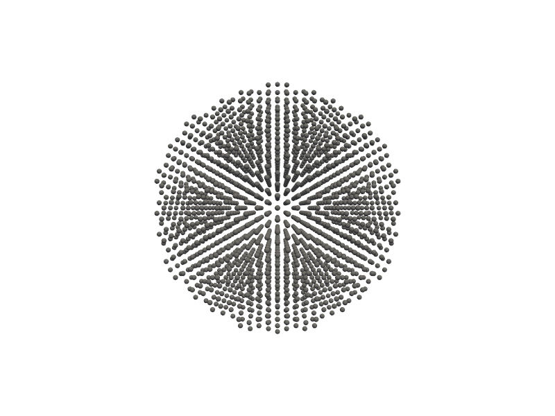
🔹 Example 3 – Au–Ag Random Alloy Nanoparticle, add_element(“Ag”, 20%, “random”)¶
In this case, silver (Ag) atoms are randomly introduced into a gold nanoparticle, forming a random alloy with 20 atomic percent Ag. This configuration modifies the electronic structure and optical response, resulting in a material that combines the stability of Au with the reactivity of Ag — a common strategy in plasmonic and catalytic design.
from PyGamLab.structures.GAM_architectures.GAM_nano_particles import Nanoparticle_Generator
from PyGamLab.structures.gamvis import Molecular_Visualizer
builder = Nanoparticle_Generator(element="Au", size_nm=2.0)
builder.add_element("Ag",20.0,distribution="random")
Au3=builder.atoms
Molecular_Visualizer(Au3,format='efficient_plotly')
Molecular_Visualizer(Au3,format='matplotlib')
Molecular_Visualizer(Au3,format='pyvista')
Added Ag (20.0%) with random distribution
Visualizing 249 atoms using efficient_plotly format...
Visualizing 249 atoms using matplotlib format...
Visualizing 249 atoms using pyvista format...
C:Userskarimminiconda3envsscience_envlibsite-packagespyvistajupyternotebook.py:37: UserWarning: Failed to use notebook backend: No module named 'trame' Falling back to a static output.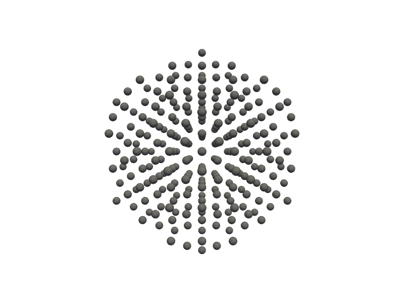
🔹 Example 4 – Au–Ag Random Alloy Nanoparticle, add_element(“Ag”, 40%, “random”)¶
Here, the silver concentration increases to 40%, further shifting the structural and electronic balance toward Ag. Higher Ag content typically causes a blue shift in the plasmonic resonance and enhances chemical activity, which can be useful for surface-enhanced Raman spectroscopy (SERS) and sensor technologies.
from PyGamLab.structures.GAM_architectures.GAM_nano_particles import Nanoparticle_Generator
from PyGamLab.structures.gamvis import Molecular_Visualizer
builder = Nanoparticle_Generator(element="Au", size_nm=2.0)
builder.add_element("Ag",40.0,distribution="random")
Au4=builder.atoms
Molecular_Visualizer(Au4,format='efficient_plotly')
Molecular_Visualizer(Au4,format='matplotlib')
Molecular_Visualizer(Au4,format='pyvista')
🔹 Example 5 – Au–Ag Surface-Enriched Nanoparticle, add_element(“Ag”, 10%, “surface”)¶
This final example creates a core–shell-like nanoparticle, where 10% silver atoms are distributed only on the surface (distribution=“surface”). Such particles exhibit hybrid functionality — a gold core ensuring stability and a silver shell offering high surface reactivity. This configuration is particularly relevant in catalysis and plasmonic enhancement applications.
from PyGamLab.structures.GAM_architectures.GAM_nano_particles import Nanoparticle_Generator
from PyGamLab.structures.gamvis import Molecular_Visualizer
builder = Nanoparticle_Generator(element="Au", size_nm=2.0)
builder.add_element("Ag",10.0,distribution="surface")
Au5=builder.atoms
Molecular_Visualizer(Au5,format='efficient_plotly')
Molecular_Visualizer(Au5,format='matplotlib')
Molecular_Visualizer(Au5,format='pyvista')
🌀 Category 5 — Nanotubes¶
Nanotubes are one-dimensional nanostructures with diameters typically in the nanometer range and lengths that can reach several micrometers. They can be imagined as rolled-up sheets of two-dimensional materials such as graphene, forming cylindrical structures that exhibit extraordinary mechanical, electrical, and thermal properties.
Among the various types of nanotubes, carbon nanotubes (CNTs) are the most studied and widely used. Depending on how the graphene sheet is rolled, nanotubes can have different chiralities, defined by the pair of integers (n, m). These parameters determine whether the nanotube behaves as a metal or a semiconductor.
Nanotubes can exist as:
Single-walled nanotubes (SWCNTs) → one cylindrical layer of atoms.
Multi-walled nanotubes (MWCNTs) → several concentric nanotube layers.
Their properties can also be tuned by introducing dopants (foreign atoms like Si, N, or B) or by creating defects (vacancies, substitutions, etc.), which modify their conductivity and chemical reactivity.
Applications include:
Nanoelectronics (transistors, sensors, interconnects),
Composite materials (lightweight, strong structures),
Energy storage (battery electrodes), and
Catalysis and gas adsorption.
Below are five examples demonstrating how different nanotube configurations can be generated and visualized using Nanotube_Generator in PyGamLab.
🔹 Example 1 – Single-Walled Carbon Nanotube, (n=10, m=10), length=10.0 nm¶
In this example, a single-walled carbon nanotube (SWCNT) with chiral indices (10, 10) is generated. The (10,10) configuration corresponds to an armchair nanotube, which exhibits metallic electrical behavior and very high mechanical strength. The nanotube length is set to 10 nm, making it suitable for structural and electronic simulations.
from PyGamLab.structures.GAM_architectures.GAM_nanotubes import Nanotube_Generator
from PyGamLab.structures.gamvis import Molecular_Visualizer
builder = Nanotube_Generator(n=10, m=10, length=10.0, atom_type='C')
swcnt1=builder.atoms
Molecular_Visualizer(swcnt1,format='efficient_plotly')
Molecular_Visualizer(swcnt1,format='matplotlib')
Molecular_Visualizer(swcnt1,format='pyvista')
🔹 Example 2 – Single-Walled Carbon Nanotube, (n=20, m=10), length=10.0 nm¶
Here, the chirality changes to (20, 10), producing a chiral nanotube (neither purely armchair nor zigzag). Chiral CNTs typically exhibit semiconducting properties, depending on the exact (n, m) combination. This example illustrates how modifying the chirality indices alters the nanotube’s electronic band structure and symmetry.
from PyGamLab.structures.GAM_architectures.GAM_nanotubes import Nanotube_Generator
from PyGamLab.structures.gamvis import Molecular_Visualizer
builder = Nanotube_Generator(n=20, m=10, length=10.0, atom_type='C')
swcnt2=builder.atoms
Molecular_Visualizer(swcnt2,format='efficient_plotly')
Molecular_Visualizer(swcnt2,format='matplotlib')
Molecular_Visualizer(swcnt2,format='pyvista')
🔹 Example 3 – Multi-Walled Carbon Nanotube (MWCNT), multi_wall=[(20,20)]¶
This example generates a multi-walled carbon nanotube (MWCNT) consisting of two concentric layers: an inner (10,10) tube and an outer (20,20) shell. MWCNTs display enhanced mechanical stability and thermal conductivity due to interlayer van der Waals interactions. They are frequently used in composite reinforcement and thermal management systems.
from PyGamLab.structures.GAM_architectures.GAM_nanotubes import Nanotube_Generator
from PyGamLab.structures.gamvis import Molecular_Visualizer
builder = Nanotube_Generator(n=10, m=10, length=10.0, atom_type='C',multi_wall=[(20,20)])
mwcnt=builder.atoms
Molecular_Visualizer(mwcnt,format='efficient_plotly')
Molecular_Visualizer(mwcnt,format='matplotlib')
Molecular_Visualizer(mwcnt,format='pyvista')
🔹 Example 4 – Si-Doped Carbon Nanotube, doping={‘dopant’:‘Si’, ‘concentration’:0.1, ‘pattern’:‘random’}¶
In this model, silicon (Si) atoms are randomly substituted into the carbon lattice at a 10% concentration. Such doping can tune the electrical conductivity and chemical reactivity of CNTs, enabling applications in gas sensors and semiconductor devices. Random distribution ensures that dopants are spread throughout the nanotube surface, affecting local bonding and curvature.
from PyGamLab.structures.GAM_architectures.GAM_nanotubes import Nanotube_Generator
from PyGamLab.structures.gamvis import Molecular_Visualizer
doping_elements = {'dopant':'Si','concentration':0.1, 'pattern':'random'}
builder = Nanotube_Generator(n=10, m=10, length=10.0, atom_type='C',doping=doping_elements)
cnt1=builder.atoms
Molecular_Visualizer(cnt1,format='efficient_plotly')
Molecular_Visualizer(cnt1,format='matplotlib')
Molecular_Visualizer(cnt1,format='pyvista')
🔹 Example 5 – Defective Carbon Nanotube, defects={‘vacancies’:0.1, ‘substitutions’:{‘atom’:‘Si’, ‘ratio’:0.05}}¶
In the final example, structural defects are introduced intentionally:
10% atomic vacancies, representing missing carbon atoms, and
5% silicon substitutions, simulating impurity atoms replacing carbon sites.
These imperfections play a critical role in determining chemical activity, adsorption behavior, and mechanical flexibility. Defect engineering is a powerful tool in tailoring CNTs for catalysis, energy storage, and functional coatings.
from PyGamLab.structures.GAM_architectures.GAM_nanotubes import Nanotube_Generator
from PyGamLab.structures.gamvis import Molecular_Visualizer
defects = {'vacancies': 0.1, 'substitutions': {'atom': 'Si', 'ratio': 0.05}}
builder = Nanotube_Generator(n=10, m=10, length=10.0, atom_type='C',defects=defects)
cnt2=builder.atoms
Molecular_Visualizer(cnt2,format='efficient_plotly')
Molecular_Visualizer(cnt2,format='matplotlib')
Molecular_Visualizer(cnt2,format='pyvista')